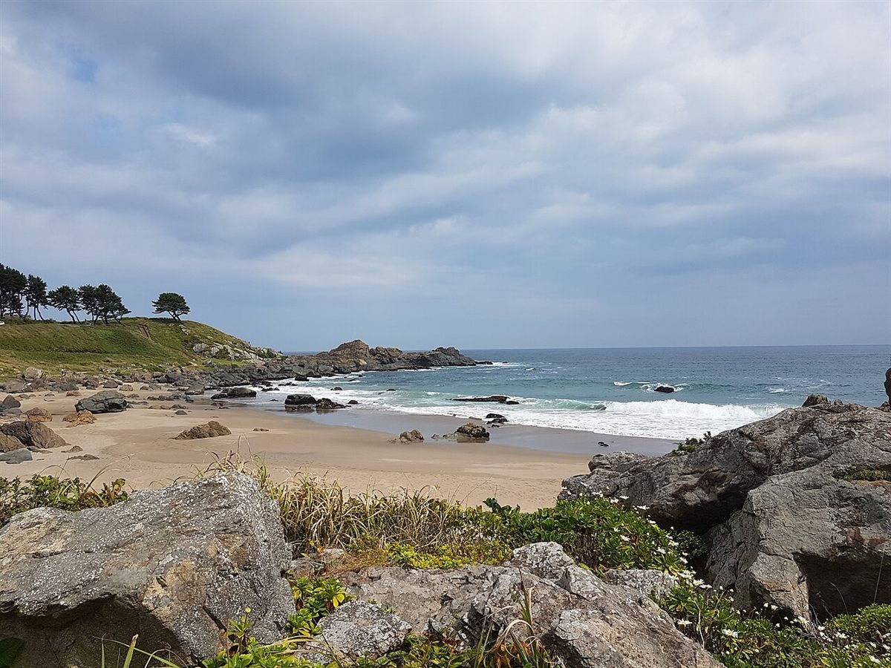

Voice
口コミ(イメージ例)
ここに並べるのは、ベーグルや焼菓子のお店という業種から自然に想像できる声を、制作側が創作した「イメージ例」です。実在のお客様の投稿ではありません。実際の口コミは、お店の許可をいただいたうえで差し替えます。
イメージ例袋を開けたら、ほんのり香ばしいにおいがしそう。噛みごたえのある生地を想像すると、朝ごはんが楽しみになる気がする。
イメージ例焼菓子をひとつ買って、海のほうへ歩きたくなりそう。ちいさな袋を提げて帰る時間が、ちょっとした楽しみになると思う。
イメージ例お店の名前を聞くだけで、やさしい気持ちになる。店先でゆっくり選ぶ時間が、きっと心地よいのではないかな。
